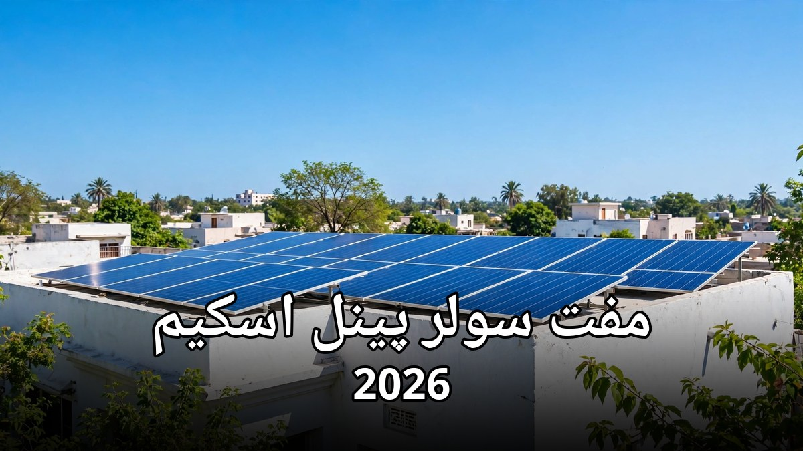

مفت سولر پینل اسکیم 2026: اہلیت اور اپلائی کا طریقہ

بجلی کا بل آج ہر گھرانے کی سب سے بڑی پریشانی بن چکا ہے — گرمیوں میں بل ہزاروں روپے تک پہنچ جاتا ہے اور مہینے کے آخر میں بجٹ بگڑ جاتا ہے۔ اسی پریشانی کو کم کرنے کے لیے پنجاب حکومت نے مفت سولر پینل اسکیم شروع کی ہے، جس کے تحت ایک لاکھ گھرانوں کو مفت سولر سسٹم دیا جائے گا۔ اس مضمون میں اسکیم کی مکمل تفصیل — کون اہل ہے، کیا ملے گا اور اپلائی کا طریقہ — آسان اردو میں بیان کی گئی ہے۔
1۔ مفت سولر پینل اسکیم کیا ہے؟
یہ اسکیم پنجاب حکومت کی جانب سے شروع کی گئی ہے جس کا مقصد کم بجلی استعمال کرنے والے گھرانوں کو مفت سولر سسٹم دے کر ان کا بل کم کرنا ہے۔ پہلے مرحلے میں صوبے بھر کے ایک لاکھ گھرانوں کو سولر سسٹم فراہم کیا جائے گا اور تنصیب بھی حکومت کی طرف سے مفت کرائی جائے گی۔ سورج کی مفت توانائی سے بجلی بنے گی اور گھر کا بل نمایاں طور پر کم ہو جائے گا۔
2۔ اسکیم کے تحت کیا ملے گا؟
سولر سسٹم کا سائز آپ کے گھر کی ماہانہ بجلی کی کھپت کے حساب سے طے کیا جاتا ہے۔ اسکیم میں دو درجے رکھے گئے ہیں:
- 550 واٹ کا سسٹم: ان گھرانوں کے لیے جن کی ماہانہ بجلی کی کھپت سو یونٹ تک ہے — اس میں سولر پینل، انورٹر اور ضروری سامان شامل ہوتا ہے
- 1100 واٹ کا سسٹم: ان گھرانوں کے لیے جن کی ماہانہ کھپت 101 سے 200 یونٹ کے درمیان ہے — اس میں بڑا پینل اور زیادہ صلاحیت کا انورٹر دیا جاتا ہے
- مفت تنصیب: سسٹم کی لگانے کی مزدوری اور تنصیب کا خرچ بھی حکومت برداشت کرے گی
- بل میں بچت: سسٹم لگنے کے بعد دن کے وقت گھر کی بجلی سولر سے چلے گی، جس سے بل میں واضح کمی آئے گی
3۔ کون اہل ہے؟ اہلیت کی شرائط
اسکیم میں شامل ہونے کے لیے درج ذیل شرائط پوری ہونا ضروری ہیں:
- پنجاب کا رہائشی: درخواست دہندہ پنجاب کا مستقل رہائشی ہو اور بجلی کا کنکشن پنجاب میں ہو
- ماہانہ کھپت دو سو یونٹ تک: گھر کی ماہانہ بجلی کی کھپت دو سو یونٹ یا اس سے کم ہونی چاہیے — دو سو یونٹ سے زیادہ استعمال کرنے والے گھرانے اس اسکیم میں شامل نہیں ہو سکتے
- درست بجلی کنکشن: بجلی کا میٹر درخواست دہندہ کے نام پر ہو یا وہ گھر کا مالک ہو — کرائے دار بھی مالک کی اجازت سے درخواست دے سکتے ہیں
- قومی شناختی کارڈ: درخواست دہندہ کے پاس درست شناختی کارڈ ہونا لازم ہے
- بل کی ادائیگی: بجلی کا بل باقاعدگی سے ادا کیا جاتا ہو — نادہندہ یا چوری شدہ کنکشن والے گھرانے اہل نہیں ہیں
- ایک گھرانہ، ایک سسٹم: ایک خاندان صرف ایک سسٹم کے لیے درخواست دے سکتا ہے
4۔ کون اہل نہیں ہے؟
کچھ گھرانے اس اسکیم میں شامل نہیں ہو سکتے، جن میں ماہانہ دو سو یونٹ سے زیادہ بجلی استعمال کرنے والے، کمرشل یا صنعتی کنکشن رکھنے والے اور وہ گھرانے جن کے بل کی ادائیگی کئی مہینوں سے رکی ہوئی ہو شامل ہیں۔ اگر کسی گھرانے کو پہلے ہی کسی اور سرکاری اسکیم کے تحت مفت سولر سسٹم مل چکا ہے تو وہ دوبارہ درخواست نہیں دے سکتا۔
5۔ آن لائن اپلائی کا طریقہ — قدم بہ قدم
آن لائن درخواست دینا سب سے آسان طریقہ ہے اور اس میں صرف چند منٹ لگتے ہیں:
- مرحلہ 1 — سرکاری پورٹل کھولیں: اپنے موبائل یا کمپیوٹر پر اسکیم کی سرکاری ویب سائٹ cmsolarscheme.punjab.gov.pk کھولیں — صرف اسی سرکاری ویب سائٹ سے اپلائی کریں
- مرحلہ 2 — اکاؤنٹ بنائیں: اپنا شناختی کارڈ نمبر اور موبائل نمبر درج کر کے اکاؤنٹ بنائیں — موبائل پر تصدیقی کوڈ آئے گا، اسے درج کریں
- مرحلہ 3 — بجلی کا حوالہ نمبر درج کریں: اپنے بجلی کے بل پر موجود ریفرنس نمبر درج کریں — اس سے آپ کی ماہانہ کھپت خود بخود چیک ہو جائے گی
- مرحلہ 4 — معلومات مکمل کریں: نام، پتہ اور گھر کی تفصیل درست درج کریں — غلط معلومات پر درخواست مسترد ہو سکتی ہے
- مرحلہ 5 — درخواست جمع کرائیں: فارم جمع کرا دیں اور درخواست نمبر محفوظ کر لیں — یہی نمبر بعد میں درخواست کی حالت چیک کرنے کے کام آئے گا
6۔ ایس ایم ایس سے رجسٹریشن کا طریقہ
اگر آپ کے پاس انٹرنیٹ نہیں ہے یا آپ آن لائن فارم بھرنا نہیں چاہتے تو ایس ایم ایس کے ذریعے بھی رجسٹریشن کروائی جا سکتی ہے۔ اپنے موبائل سے اپنے بجلی کے بل کا ریفرنس نمبر اور شناختی کارڈ نمبر 8800 پر ایس ایم ایس کریں۔ کچھ دیر بعد آپ کو تصدیق کا جواب موصول ہو گا جس میں بتایا جائے گا کہ آپ اہل ہیں یا نہیں۔ ایس ایم ایس بھیجنے سے پہلے بل پر موجود ریفرنس نمبر بالکل درست لکھیں — ایک ہندسے کی غلطی سے بھی درخواست غلط ہو سکتی ہے۔
7۔ قرعہ اندازی اور تنصیب کا عمل
درخواستیں جمع ہونے کے بعد اہل درخواست دہندگان کی جانچ پڑتال کی جاتی ہے۔ چونکہ سسٹم محدود تعداد میں ہیں، اس لیے منتخب گھرانوں کا فیصلہ شفاف قرعہ اندازی کے ذریعے کیا جاتا ہے۔ نام آنے پر آپ کو ایس ایم ایس یا فون کال کے ذریعے اطلاع دی جائے گی۔ اس کے بعد حکومت کی مقرر کردہ ٹیم آپ کے گھر آ کر سسٹم کی تنصیب کرے گی — تنصیب سے پہلے چھت کی جگہ اور وائرنگ کا جائزہ لیا جاتا ہے۔
8۔ سولر سسٹم سے بل میں کتنی بچت ہوگی؟
بچت کا انحصار آپ کی کھپت اور سورج کی روشنی پر ہوتا ہے۔ دن کے وقت جب سورج تیز ہوتا ہے تو سولر پینل بجلی بناتے ہیں اور گھر کے پنکھے، بلب اور چھوٹے آلات اسی بجلی سے چلتے ہیں — اس دوران میٹر کی بجلی استعمال نہیں ہوتی۔ اوسطاً ایک چھوٹے گھرانے کا بل آدھے سے بھی کم ہو سکتا ہے، خاص طور پر گرمیوں میں۔ یاد رکھیں کہ یہ سسٹم دن کے وقت سب سے زیادہ فائدہ دیتا ہے، رات کو بجلی عام میٹر سے ہی استعمال ہوتی ہے جب تک کہ ساتھ بیٹری نہ لگی ہو۔
9۔ درخواست کی حالت کیسے چیک کریں؟
درخواست جمع کرانے کے بعد اس کی حالت معلوم کرنا بھی آسان ہے۔ سرکاری پورٹل پر جا کر اپنا درخواست نمبر یا شناختی کارڈ نمبر درج کریں تو معلوم ہو جائے گا کہ درخواست موصول ہوئی، جانچ کے مرحلے میں ہے یا قرعہ اندازی میں نام آیا ہے۔ اگر آپ نے ایس ایم ایس سے رجسٹریشن کی تھی تو اسی نمبر پر اطلاع ملتی رہے گی۔ حالت چیک کرنے کے لیے کسی ایجنٹ یا دفتر جانے کی ضرورت نہیں۔
بجلی کے بڑھتے ہوئے بلوں کے اس دور میں مفت سولر سسٹم ایک بڑی سہولت ہے — اس سے نہ صرف آپ کا ماہانہ بل کم ہوگا بلکہ سورج کی صاف توانائی کا استعمال ماحول کے لیے بھی بہتر ہے۔ اگر آپ کی ماہانہ کھپت دو سو یونٹ تک ہے تو آج ہی اپلائی کریں، کیونکہ سسٹم محدود ہیں اور درخواستیں زیادہ آنے پر قرعہ اندازی ہوگی۔ درخواست دینے سے پہلے اپنا شناختی کارڈ اور بجلی کا بل تیار رکھیں۔